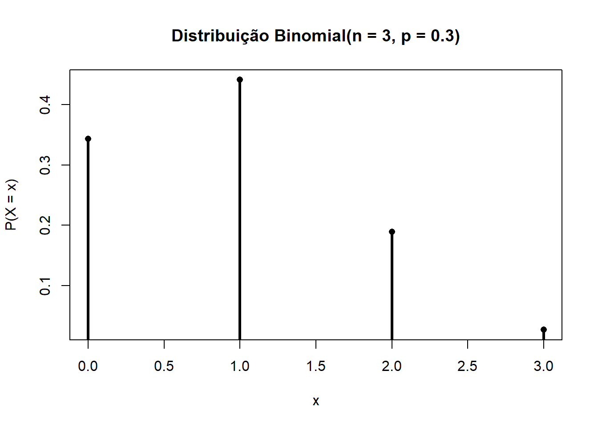

Uma variável aleatória \(X\) é uma função que mapeia alternativas do espaço amostral \(\Omega\) para o conjunto dos números reais: \(X: \Omega \rightarrow \mathbb{R}\).
O espaço amostral \(\Omega\) é o conjunto das alternativas possíveis de serem sorteados. Exemplo:
\(\mathbb{P} (\Omega) = 1\) – soma das barras discretas é 1, e a área sob a curva contínua é 1
Probabilidade de um evento ocorrer é \(p\), e a probabilidade de um evento não ocorrer é \(1-p\). Também podemos chamar isso de probabilidade complementar: \(p^c = 1-p\)
Probabilidade condicional é a probabilidade de um evento \(A\) dado um evento \(B\). Também escrevemos isso da seguinte maneira:
Suponha um dado de 4 lados. Temos várias combinações possíveis. Agora, vamos calcular \(\mathbb{P}(\text{Dado 1} = 4 | \text{Dado 2} = 2)\) – e devemos considerar essa segunda parte como uma espécie de “filtro”, ou seja, vamos considerar apenas os casos nos quais o segundo dado assumiu valor 2.
\(\mathbb{P}(A, B)\) é a probabilidade conjunta e \(\mathbb{P}(B)\) é a probabilidade marginal.
E, por último:
\(\mathbb{P}(A \cap B)\) é a probabilidade de co-ocorrência de eventos. Trata-se literalmente do cruzamento. Em caso de eventos independentes, \(\mathbb{P}(A \cap B) = \mathbb{P}(A) \cdot \mathbb{P}(B)\); no caso de eventos não independentes, essa probabilidade é empírica. De fato, exemplo anterior sobre dados, os eventos são independentes, já que não há qualquer relação entre os dois dados.
Funções de Distribuição, ou Distribuições Paramétricas
A distribuição Binomial representa a soma de várias variáveis Bernoulli independentes (com o mesmo valor de \(p\)) – ou seja, a Bernoulli é um caso especial da Binomial. A Bernoulli, mas especificamente, modela um único experimento que pode resultar em sucesso (com probabilidade \(p\)) e fracasso (com probabilidade \(1-p\)).
set.seed(42)# parâmetros da binomialn <-3# número de tentativasp <-0.3# probabilidade de sucesso# suportex <-0:n# pmffx <-dbinom(x, size = n, prob = p)# gráficoplot(x, fx,type ="h", lwd =3,xlab ="x", ylab ="P(X = x)",main =sprintf("Distribuição Binomial(n = %d, p = %.1f)", n, p))points(x, fx, pch =16)

Distribuições paramétricas “resumem” uma “tabela grande” em um pequeno conjunto de parâmetros (i.e. números pré-definidos) e uma fórmula.
\(\rightarrow\) Qual é a fórmula? (qual é a distribuição?)
\(\rightarrow\) Qual é o valor pré-determinado dos parâmetros?
Poisson
É uma distribuição com espaço amostral \(x \in \mathbb{I}\) com um único parâmetro \(\lambda\), que define, ao mesmo tempo, o ponto central e a dispersão.
tendo \(\mu\) e \(\sigma^2\) como parâmetros. Neste caso, \(\mu\) altera o “lugar” da distribuição, e \(\sigma^2\) altera a dispersão da distribuição.
Trata-se de uma distribuição impossível de tabular, porque se trata de um conjunto não enumerável – \(x \in \mathbb{R} \leftrightarrow x \in (-\infty, +\infty)\).
Vejamos a forma da função com \(\mu = 1, \sigma^2 = 4\):
As distribuições discretas tem um espaço amostral enumerável, contável e é possível calcular a probabilidade de cada valor no espaço amostral exatamente.
Distribuições contínuas, por sua vez, têm \(\Omega\) não contável, não enumerável, e a probabilidade de um valor específico é irrisória e não é de interesse. Calculamos a probabilidade de intervalos. Valores na região da média são muito prováveis (i.e. há alta densidade de probabilidade). Nesse caso, o cálculo da probabilidade é a área na região entre dois valores.
Se quiséssemos calcular a área entre \(-\infty\) e \(3\), faríamos:
\[
\int^3_{-\infty} f(x) dx
\]
14.2 Momentos da distribuição
Nas distribuições paramétricas, os momentos da distribuição são obtidos por meio de alguma função/transformação dos parâmetros.
Momento é um valor esperado de uma potência (centrada ou não) da distribuição.